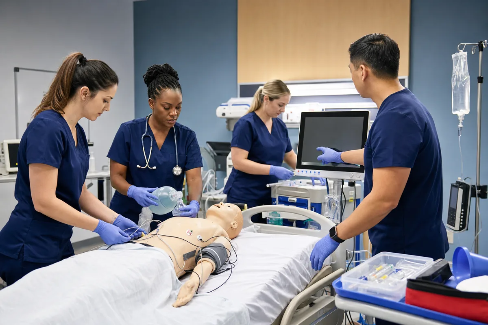

Systematic assessment
Use an organized approach to assess changes, identify priorities, and support timely clinical decisions.
Build on core life support skills with a structured approach to cardiovascular emergencies, effective communication, and coordinated resuscitation team response.

Use an organized approach to assess changes, identify priorities, and support timely clinical decisions.
Strengthen knowledge used when responding to serious cardiovascular and resuscitation scenarios.
Practice clear communication, defined roles, and coordinated action during simulated emergencies.
Advanced Cardiovascular Life Support builds on foundational life support knowledge for healthcare professionals who may participate in the response to serious cardiovascular emergencies. It brings assessment, intervention, communication, and team leadership together in a systematic approach to simulated high-acuity situations.
Before registering: ACLS participants may need current foundational life support knowledge or other preparation. Confirm your specific requirement with your employer or school.
Advanced training works best when learners can connect course concepts to the responsibilities they may encounter in healthcare settings.
Organized simulations help bring assessment, communication, and team response together.
Complex material is presented through a structured approach that supports understanding and recall.
We provide clear scheduling and preparation information so you know what to expect.
ACLS training is generally intended for healthcare professionals whose roles involve cardiovascular emergencies or participation in advanced resuscitation response.
Based in Missouri City, Nightingale RN Academy serves healthcare learners throughout the Greater Houston area.
Eligibility and prerequisites may vary. Confirm your current BLS status and the exact requirement with your employer, school, or credentialing body.
Tell us that you need ACLS and share your preferred schedule. We will follow up with availability and registration information.
Check availability